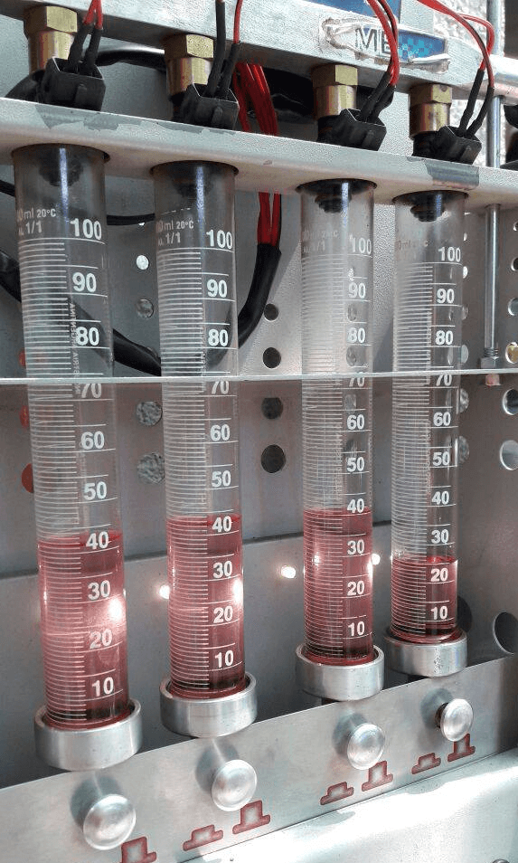
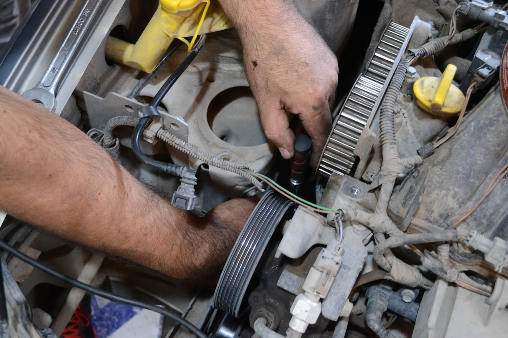
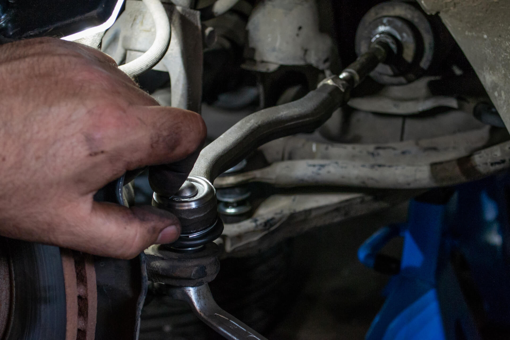
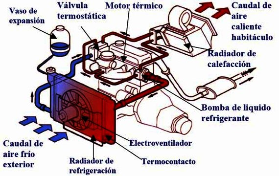
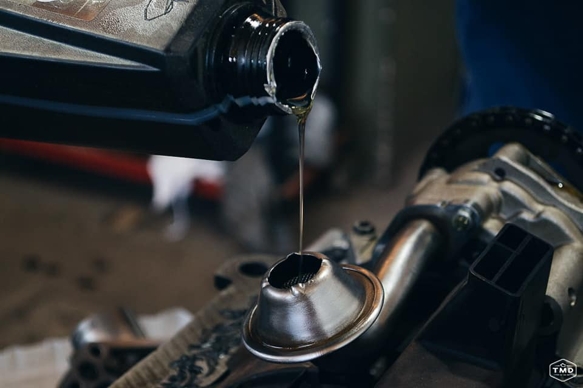
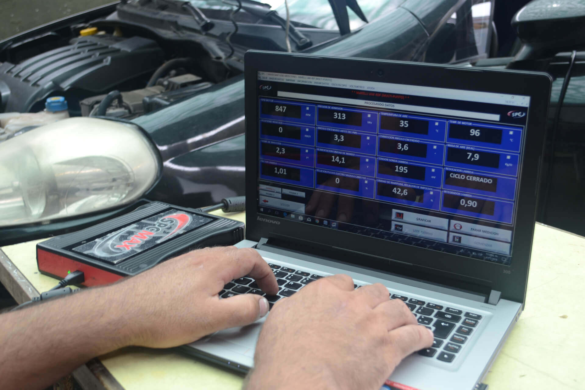
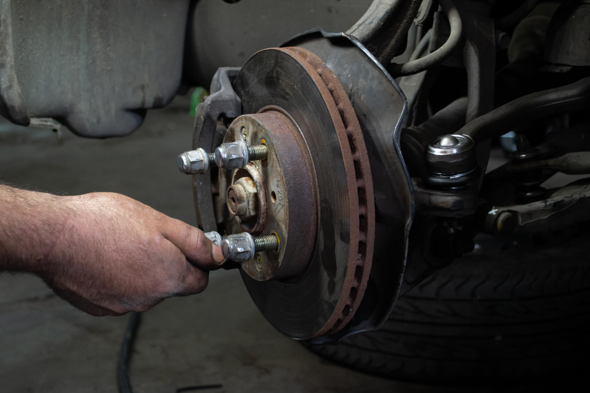

Que Trabajos Realizamos

Limpieza de inyectores
Los inyectores son fundamentales para que el motor funcione corretamente. Realizando un control y limpieza de inyectores cada 20.000KM o cada 10.000km (Coches con GNC) extendemos su vida útil. Es recomendable tener buena conducta con el chequeo de los inyectores ya que su reemplazo es costoso. Sintomas comúnes cuando estan funcionando mal son: olor a nafta, tironeos en el coche, aumento del consumo de combustible.

Kit de Distribucion
- El sistema de distribución es el conjunto de elementos que unidos por una correa dentada o una cadena sincroniza el movimiento del cigüeñal y sus pistones con la apertura y cierre de las válvulas de la tapa de cilindros. Los componentes más comunes son: correa dentada o cadena de distribución, tensores móviles y tensores fijos. Hay que controlar el kit de distribución cada 50.000KM o cada 3 años para prevenir que se rompa la tapa de cilindros o se dañen los pistones.

Tren delantero
- Caja de Dirección
- Cremallera de Dirección
- Amortiguadores
- Espirales
- Barra Estabilizadora
- Parrilla de Suspención
- Bujes, Extremos y Rótulas

Refrigeracion del motor
- Radiador de Agua
- Depósito de Agua
- Mangueras
- Termostato
- Electroventilador
- Bomba de Agua
- Líquido Refrigerante

Mantenimiento
- Cambio de Aceite
- Cambio de Filtro de Aceite.
- Cambio de Filtro de Nafta
- Cambio de Filtro de Aire
- Control Líquido de Freno
- Control Agua
- Control Líquido Hidráulico

Diagnostico computarizado
- Sonda Lambda
- MAF
- MAP
- ABS
- RPM
- TPS
- Temperatura de Agua
- Temperatura de Aire

Chequeo de frenos
- Pastilla de frenos
- Discos de frenos
- Bomba de frenos
- Servofreno
- Flexibles
- Liquido de frenos